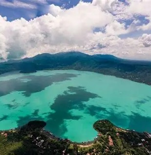
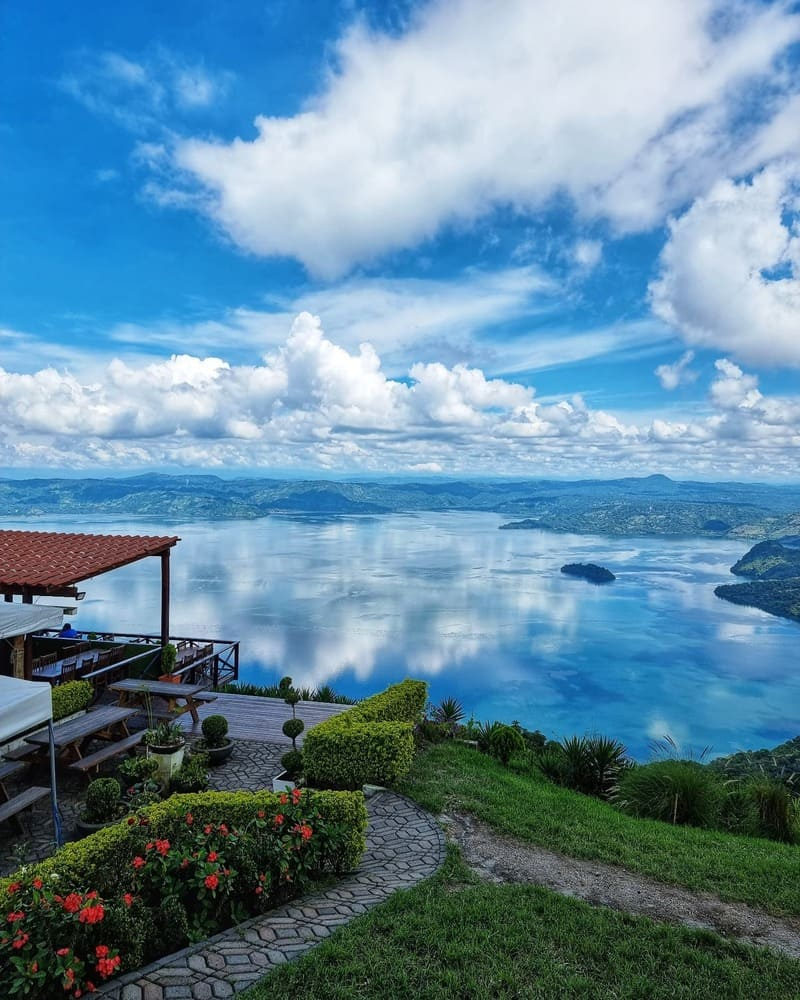
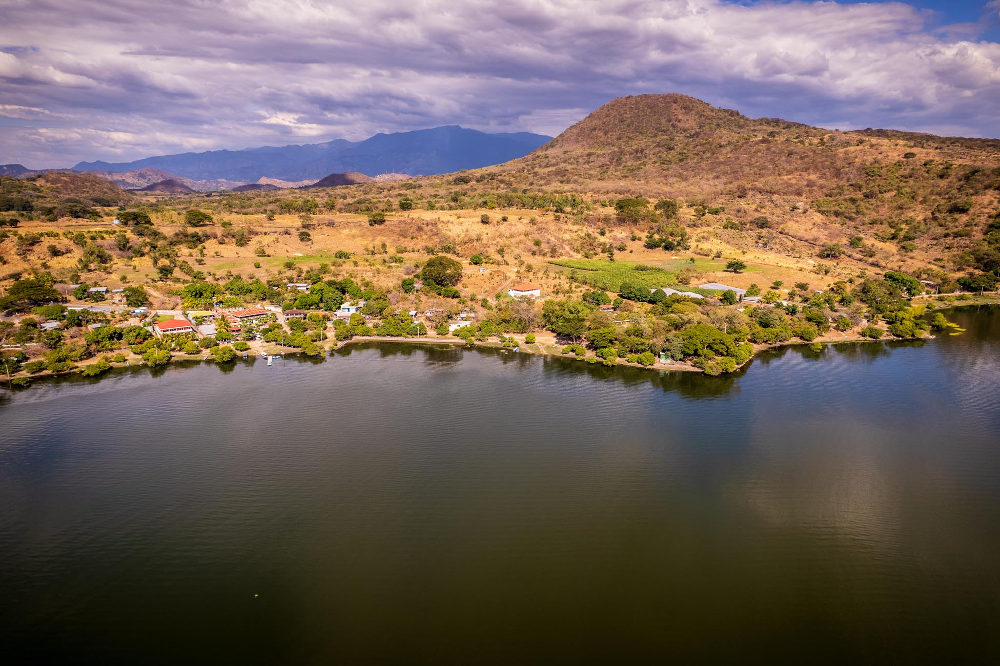

Lagos de El Salvador

Lago de Coatepeque
Uno de los lagos más hermosos de El Salvador, formado en el cráter de un volcán. Destaca por el color turquesa de sus aguas.

Lago de Ilopango
Es el lago más grande del país. Se formó por una erupción volcánica y es popular para paseos en lancha y pesca.

Lago de Güija
Ubicado en la frontera con Guatemala. Es un importante sitio arqueológico y natural rodeado de montañas.

Lago Suchitlán
También llamado Cerrón Grande. Es el embalse artificial más grande del país y refugio de aves migratorias.